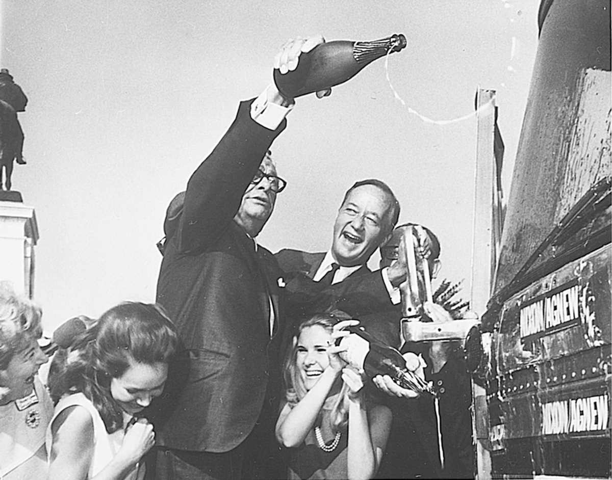
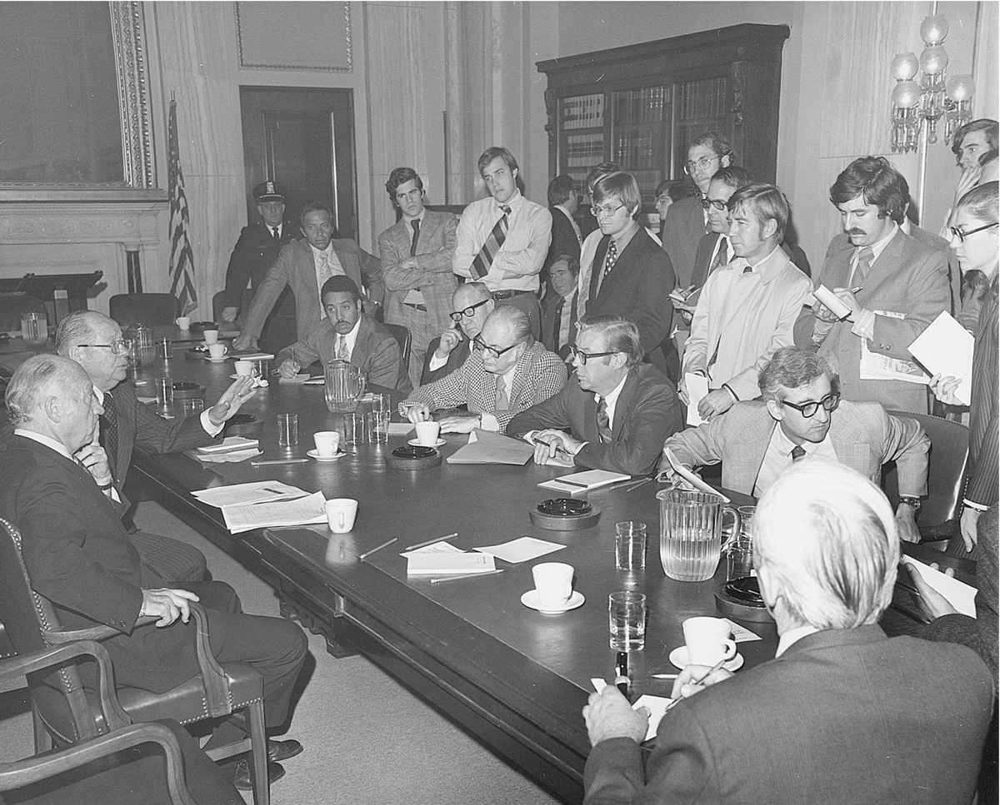

比尔·克林顿在1993年就任总统时，面对惊人的联邦赤字提出一项经济计划，将削减开支和大幅增加富裕纳税人税收结合起来。众议院共和党人一致反对增加税收，连同足够多的民主党财政保守人士，使投票形成217票对217票的平局。剩下的具有决定性意义的一票将由新任议员玛乔莉·马戈利斯–梅兹文斯基（宾夕法尼亚州民主党人）投出。梅兹文斯基的选民普遍反对这项计划，这表明她所代表的富裕的费城郊区有多不情愿承担税收冲击。马戈利斯–梅兹文斯基已经对这一计划表示反对，理由是削减开支不够彻底，但在众议院议场外的民主党休息室里，她接到克林顿打来的电话，总统以其任职前途系于梅兹文斯基的投票为由发出恳请。当她勉为其难地投出“赞成”票时，听到的却是其他议员呼喊着“再见，玛乔莉”。这项经济计划获得通过，但马戈利斯——梅兹文斯基与连任失之交臂。她回顾自己唯一的一个任期，感到不得不回答的问题在于：“你是代表，还是带领？最终，你必须抛开所有闲言和杂音、全部头条报道以及任何来电，关上办公室大门，然后做出非常艰难并且通常不受欢迎的选择。”
在地方上参加选举的国会议员候选人会前往华盛顿制定国家政策，但他们发现，就重要立法投票表决可能会迫使他们在国家需要和选民认可之间做出选择。他们必须衡量投票对于连任的机会产生的影响。他们定期返乡察看当地民情，这反过来会影响他们如何就立法进行投票表决。他们也想将带回家乡的联邦计划解释清楚，心想选民会问：“你近来为我做了什么？”议员李华斯（南卡罗来纳州民主党人）就是一个典型的例子；他将“李华斯结草衔环”作为明确的竞选口号，凭借他在军事委员会中的资历（这确保军队每一个部门都在其选区设有一处基地）在三十年中连选连任。
选举让选民有机会使他们的看法得到了解。他们可以决定维持现状还是做出改变，可以要求政府更加进取或要求限制政府，可以倾向于一种意识形态，或者仅仅是认可某位候选人的个人品质。选民再度选举在任议员，为的是使其在国会中积蓄资历和影响，又或者表明他们反对国家政策摇摆不定。奇怪的是，当民意测验对国会整体上评价不高时，选民更有可能再度选举代表他们本人的参议员和众议员。民众希望由自己的议员代表自己；他们偏偏不喜欢别人的议员。凭借这种观念，候选人时常通过与国会唱反调来竞选国会议员，将该机构整体上的不得人心作为竞选工具；正如某位议员向一位政治学家解释的，这是将他们自己与“国会中其他强盗土匪之流”区别开来。
“我要去得克萨斯了，你们可以下地狱了。”这是众议员大卫·克洛科特（田纳西州辉格党人）对其选民的斥责，他们在1834年没有再次选举克洛科特——而克洛科特在两年后的阿拉莫战役中身亡。自从联邦选举在1788年拉开帷幕之后，国会议员候选人曾先后骑马、驾车或乘火车、飞机、轿车、巴士为竞选卖力奔走。19世纪时，候选人便已成为技艺高超的政治演说家，能够面对众多听众发表演说而无须扩音器。前参议员兼副总统约翰·C.布雷肯里奇（肯塔基州民主党人）临终前清晰洪亮的声音令他的医生印象深刻。这位老政治家骄傲地说：“瞧，医生，我的声音可以传出一英里。”他的后来者们可以借助广播、电视和互联网向选民发表讲话。1920年代，候选人必须去适应看不见的广播听众。新的媒体满足了他们绚丽的竞选式演说风格，尽管有些人出于习惯依赖于麦克风而避免在舞台上走来走去。1950年代，政治家们坚持将电视作为触及全州观众的最佳途径。这种更加冷冰冰的媒体要求的是不同于以往的演说方式，对胜出的候选人产生了风格上的影响。
政治家们更看重亲身接触，但他们认识到，在全州范围内或在拥有成百上千选民的地区，他们可能开展的那种面对面的竞选活动将无法触及广大民众。他们为出现在镜头中使出了浑身解数，将最大一部分竞选经费花在电视宣传上。早在1930年代，幽默作家威尔·罗杰斯便评论道，政治事务已经昂贵到“即使被打败都需要一大笔钞票”。每一位议员在筹集竞选资金上消耗的时间都是不同寻常的，这也致使国会工作日缩短到周二至周四。由于资金筹集活动也为游说人员提供了渠道，这也成为一项政治事务。如今，竞选财务改革要求国会议员候选人披露其资金收支数额及资助人姓名。但在“巴克利诉瓦莱奥案”（1976）中，最高法院推翻了旨在限制竞选开支的立法。大法官们裁定，候选人用于其竞选的个人资金不得受限。反对者将这类约束称为限制言论自由，而支持者认为，不受限制的个人开支是对富人的偏袒。金钱可以开口讲话，而那些越富有的人，讲话声调也越高。

图3 竞选活动既可能充满欢乐，也可能困难重重。图为1968年参议院少数党领袖埃弗里特·M.德克森（伊利诺伊州共和党人）和查尔斯·马赛厄斯（马里兰州共和党人）在国会大厦庆祝首次启用竞选巴士
尽管进行过多方面的改革努力，竞选开支依然持续攀升。国会议员候选人越来越离不开数量猛增的政治行动委员会作为其募捐方。政治行动委员会得到特殊利益集团、单一事务集团以及国会中的热心领袖们的资助，它们将资金分拨给多个候选人，从而为他们的事业获取支持。竞选结束后，政治行动委员会经常会帮助获胜者偿还竞选债务并为下一次角逐作准备。为某位特定候选人筹集的资金称为“硬钱”，为一般性动员拉票（get-out-the-vote）活动而非特定候选人筹集的资金称为“软钱”，其管理不如硬钱严密。在筹集软钱的过程中，全国性政党组织会创造广泛机会使捐赠人私下同最具影响力的委员会主席会面。反过来，一些全国性协会则会为委员会主席处理他们希望获得通过的法案接待募捐者。2002年《麦凯恩–法因戈尔德法》试图禁止使用“软钱”，但反对者们创造性地寻找到了规避这项法规的途径。
一旦上任，两次选举之间的时间转瞬即逝。由于众议院中上至议长、下至新人所有议员的任期都会在两年后期满，议员们会在落选、退休或离世前不间断地忙于竞选。在众议院议员各自的选区之中，他们会坚持不懈地在临街铺面、集市和社区集会中发展选民。众议员吉恩·斯奈德（肯塔基州共和党人）形成了一种惯例，他会沿着穿越其选区的42号公路驱车，随机停在咖啡馆和理发店旁，去了解人们在想些什么。即便任期更长的参议员也遵循着相似的惯例。尽管政治家们高度依赖民意调查专家去监控民意，国会议员却时常发现，在本州做定期巡访可以无须再进行昂贵的民意调查，原因在于他们在周末可以与之交谈的民众数量会超过民调对象。参议员理查德·拉塞尔（佐治亚州民主党人）过去常说，六年任期使参议员们用两年时间做政治家、两年做政客、两年做煽动家。但参议员弗莱彻·汤普森（佐治亚州共和党人）评论道，“参议员可以去做政治家，但作为政治家之奢侈”是众议员无法承担的。“众议员每两年竞选一次。他不能远离所在选区的基础民意，否则他不会再次当选。”
在任者们称，要竞选连任，只有两条路：要么畏缩不前，要么所向披靡。即使面对反对者，众议员重新当选的概率也是比较高的，这部分是由于担任公职带来的较高的知名度，另一部分原因在于，州立法机构中其所属政党会圈定国会选区边界以最大限度地扩大政党在选区中的实力。多数选区都是稳定的民主党或共和党选区。一些边缘选区则摇摆不定，总统选举年尤其如此。稳定的议席有时会鼓励议员在华盛顿保持低调。他们几乎不会联合发起修正案或在议场发言，而是会致力于增进其选区的需求并回应选民的需要。不断连任使他们得以悄然地层层攀升以影响政策。
然而，稳定的议席也有可能丧失。一些选区可能在人口普查后予以合并，迫使同僚在初选中相互角逐以占领新选区。尽管连任率达到96%，众议院的议员构成却从不是一成不变的。过世、退休、角逐其他职位以及落选，使每次选举后众议院议员队伍出现10%到20%的平均调整率。在任何一段特定的时间里，众议院半数议员任职都不超过十一年。
宪法没有提及政党，原因在于一些制宪者曾祈盼避免形成引起纷争的“派别”。但政党还是在共和国早期迅猛发展起来，成为国会制定政策的一股关键力量。参、众两院议会大厅正中的过道将两个主要政党分隔开来。两个政党有各自的休息室，各自选举本党领袖，并各自召开本党大会。政党各自选择本党成员任命到委员会中。政党领袖、委员会主席以及少数党资深议员会在议会大厅中处理立法事务。多数党筹划并推动立法议程，少数党则抓住每一个时机重塑议程。无论在委员会还是在议场，立法都无一例外地彰显着政党之间的紧张关系，这在各分支间的制约与平衡之中掺入了政治因素。
早在1788年宪法交予批准之际，政党便初露端倪，是时宪法的支持者和反对者大体上分立为联邦党人和反联邦党人。联邦党人主导着前三届国会，直至1795年其对手（当时作为民主共和党人为人所知）赢得众议院多数席位。在1800年选举中，联邦党人在参、众两院均告失利，从此再未重获权力。经历了几十年的一党治国即所谓“感觉良好的时代”后，1830年代，国会在政治上划分为支持安德鲁·杰克逊的民主党人，及其反对者辉格党人。两党都结合了南北两派。准州地区一触即发的奴隶制问题随后最终削弱了辉格党，该党北方成员与反奴隶制的民主党人及其他党派将组成共和党。1857年后，国会便由共和党和民主党主导。
考虑到美国的疆域和多样性，国会中两党制的长期延续非同寻常。造成这种情况的因素之一在于宪法要求通过选举人团选举总统。政党需要在全国范围内整合多数选民，这鼓励其形成广泛的基础并具有包容性，同时阻碍了专注于意识形态的第三党和地区性政党。比如，得克萨斯州亿万富翁罗斯·佩罗主要依靠个人资金参加1992年竞选并获得1970万张大众选票，但没有赢得一张选举人票，致使其改革党销声匿迹。各州都由选区（选区并非宪法所定）而不是在全州范围内选举众议员，这进一步巩固了两党制。第三党偶尔会占有国会议席，但为时甚短。入选国会的独立议员需加入某一主要党团才能合情合理地获得委员会任命。在两院中都曾加入民主党党团的独立议员伯尼·桑德斯（佛蒙特州独立议员）评论道：“即使不是政治天才也知道，如果孤军奋战，成就必定有限。”
然而，在两党制的庞大营帐中潜藏着对立的观念，这在政党的国会大会中时常显而易见。内战之后，民主党成为南方乡村白人和北方城市移民的混合体。共和党在新英格兰和中西部地区仍然势不可挡，各种改革运动偶尔从西部地区推举出国会议员。因此，在整个20世纪，国会事实上在四党制下运行，保守的民主党人与共和党人联合投票反对两党中的自由派人士。1912年，西奥多·罗斯福作为进步党人竞选总统，致使共和党走向分裂。共和党在几十年当中分化为东部自由派和中西部保守派。与此同时，保守的南方人在民主党内部构成重要的少数派，逐渐积累起来的资历使他们获得了多数主要委员会的主席之职。1964年《民权法》的通过见证了“南方阵地”（Solid South）的解体，深刻地改变了国会选举模式。在一个世纪当中，国会版图曾一度遵循《密苏里妥协案》确定的旧有界限，民主党人大体上代表界限以南的选区，共和党人则代表界限以北的选区（一些较大的城市除外），这恰好自东向西将国家一分为二。至20世纪末，国会版图却近似于杰克逊·波洛克的画作。伴随所有地区政治竞争性的增强，参、众两院共和党和民主党大会内部越发团结，愿意为两党合作而跨越界限的中间派议员越来越罕见。以往政党内部分化时期，国会很少严格依据政党阵线投票，如今却司空见惯。
每四年，国会议员候选人就要与其所属政党的总统提名人选列入同一张竞选选举票。若双方同时获胜，总统候选人在相应州或选区的声望将会时常影响到他们在任上的关系。若总统候选人在某州或选区恰巧不受欢迎，国会议员候选人就会避开全国选举票而参加地区竞选，也会在总统候选人前往当地时，避开公众视线。如果某位国会议员候选人赢得选举的差额票数超过总统，白宫将很难说服他投票赞成那些在其家乡不得人心的法案。如果一位取胜的候选人认为其当选应归功于总统的政治威望，他将出于感激和自保而支持总统。不受欢迎的总统可能在国会中对其政党造成严重打击。1977年，吉米·卡特在民主党保有参、众两院绝对多数席位时担任总统，但他疏远了那些原来的支持者以致遭遇一系列立法挫折。当卡特在1980年竞选失败时，他在傍晚早些时间甘拜下风的举动压低了西部地区的选民投票率，这些地区依旧剩余几个小时的投票时间，由此牺牲掉一些杰出民主党人的议席和参议院多数党地位。1994年，比尔·克林顿雄心勃勃的医疗保险计划一败涂地，使其政党在国会中期选举中丧失了参、众两院的多数党地位。共和党从此主导国会，直至2006年中期选举时，乔治·W.布什发动伊拉克战争及卡特里娜飓风救援处理失当使民主党得以重获多数党地位。
在提名国会议员候选人的初选制度产生之前，通常由政党领袖选拔那些层层脱颖而出的人作为候选人。进步主义改革者们推动举行初选，将决定权交予民众，这时常导致被选出的候选人要么是独立企业家，要么可以个人出资参加竞选，又或者较少响应党纪。在国会中，政党也尽其所能影响结果。在参、众两院，政党大会会指派国会竞选委员会招募候选人、为民意测验提供资源、筹集资金并为如何支出这些经费提供建议。众议院多数党领袖汤姆·迪莱（得克萨斯州共和党人）将全国竞选委员会比作主要为委员们存在的俱乐部。迪莱评论道：“成员资格的主要好处就是向那些陷入困境以及发现本人身处激烈竞选之中的人提供大笔竞选资金，或者至少可以触及这些资金。但这也是互惠互利的。要获得这种集体性政治保障，必须付出额外的费用：你需要向俱乐部贡献一笔资金，资金数额根据资历、连任把握、委员会任命等情况协商而定。而一旦有需要，你必须愿意为其他一些身处险境的成员外出工作。”
计票时，落后方可能会对结果提出异议。宪法准许国会任何一院决定候选人是否获得席位。即使委员会对指控展开调查，具有争议的获胜方也可能“不受歧视”地被安排到议席上。两次有争议的选举彰显了国会两院不同的运作方式。1974年选举后，参议院规则委员会用数月时间试图重新统计新罕布什尔州的选票，该州的两位候选人都宣称本人获胜。因双方无法就哪一方实际取胜达成一致意见，参议员们将这一选举退回该州，1975年9月民主党人在一场新的选举中赢得议席。相比之下，在1984年选举中，在任议员弗兰克·迈克洛斯基（印第安纳州民主党人）起初以72票差额获胜。重新计票后，其共和党对手理查德·麦金太尔却领先34票。印第安纳州证明麦金太尔得胜。随后作为众议院多数党的民主党单独重新计票，并宣称迈克洛斯基以4票差额取胜。众议院共和党试图宣布议席空缺并迫使进行重新选举，但民主党投票表决迈克洛斯基获得议席。联邦法院裁定该项选任成立，愤怒的共和党作为少数党则将这场有争议的选举作为斗争口号，从此众议院政党纷争愈演愈烈。
国会只是偶尔拒绝接纳议员。1865年，国会中的北方议员将前南部邦联选举的所有议员拒之门外，直至这些州批准宪法第十三条修正案进而废除奴隶制。参、众两院也曾以公民资格、渎职、叛国和宗教信仰问题为由将一些议员排斥在外。1919年，众议院拒绝维克托·伯格尔获得议席，这位威斯康星州社会党人因发表反对美国参加第一次世界大战的文章被判违反1917年《间谍法》。然而，最高法院推翻其定罪后，伯格尔在众议院担任了三届议员。1967年，众议院以不认同亚当·克莱顿·鲍威尔（纽约州民主党人）放纵的生活作风为由将其逐出。最高法院在1969年推翻了这项决定，理由是众议院固然凭借宪法授权通过三分之二赞成票逐出鲍威尔，但鲍威尔的任职符合所有宪法要求，因此必须获得议席。
各州不能决定国会议员的任职期限，也不能通过请愿或州内投票将其召回。有人认为，既然其所在州的宪法准许对州政府官员采取这类做法，同样的规定也适用于参议员和众议员。但所有国会议员过去没有、将来也不会被召回，除非通过宪法修正案予以批准。法院已经裁定，议员仅有的资格限制乃宪法明确规定的那些条件：年龄、公民身份以及居住地。
那些刚刚取胜的议员乃首次当选，踏入国会时怀着全新的想法想诉诸立法，他们经常对缓慢的立法步伐急不可耐。他们需要一段时间才能意识到分权意味着议会大厅只是政府的一个部分而并非全部。一项在众议院顺利通过的法案可能在参议院石沉大海。立法者们必须将他们的想法包装得不仅能说服他们的领导班子，还要能获得另一院、总统以及法院的认可。一场关键性选举之后，一个全新的或经过扩充的多数党可能发起首轮大规模立法活动，但假以时日，制衡机制会对急剧的变化构成阻碍。新任议员也会抱怨工作要求、无法确定个人日程、长时间远离家人以及大量筹款工作带来的压力，但他们都会竞选连任。
一些新议员在试图改革制度的过程中下定决心削减联邦开支并废止分肥政治，以致他们会投票反对将联邦资金划拨到本人所在选区。（“分肥”这种说法可以追溯到内战前的种植园时期，当时的农业工人会从一大桶腌猪肉中捞取食物；与此相似，当立法者们为其所在选区的特定项目取得联邦资金时，他们也就“将腌猪肉带回家乡”。）在选民中间，这或许并不是一个受欢迎的做法。在激烈角逐中取胜的议员可以说是“训练有素”地回到国会，他们更愿意为了迎合选民的需要做出妥协。那些研究国会投票模式的人观察发现，在国会中任期越长的议员越倾向于“回归中庸”，他们会调整思想观念以提高连选连任的概率。
面对国家和地方之间常见的利益矛盾，英国政治理论家兼议员埃德蒙·伯克曾在1774年向其选民表示，立法者必须表达“全国普遍意见”而不是“地区偏见”。伯克断言，议员必须敢于“在经过判断并确定选民有错时抵制他们的意愿”。然而，正是这高尚的情操使伯克在投票时与所属地区的利益唱反调，以致在1780年再次参选时落败。
国家需要、政党团结以及总统施加的压力，经常迫使议员面临艰难的投票。资深参议员威廉·纳彻（肯塔基州民主党人）曾经常建议新议员“做正确的事，然后回乡向当地民众解释为何如此行事……一些表决会使你遍体鳞伤。如果你做出解释，家乡父老将使你安适如常”。政治学家们在研究代表制的过程中将国会议员分为代理人（遵循选民意愿）和受托人（坚守个人原则）两类，他们发现多数议员会根据议题融合这两种倾向。越是对选民有直接影响的问题，尤其是经济政策，他们越期待议员担当选区公仆。越是国家防御和对外政策之类事不关己的议题，议员对其采取的独立态度越常会得到选民的宽容。
在众议院，少数党议员发现他们相对容易冲破层级，在本党必然失败的问题上“投票支持其所属选区”。在参议院，为避免遭遇终止辩论规则，少数党领袖需要至少握有41票，并且要提醒政党大会，他们的力量有赖于团结一致。政党也将寻求各种方法使人微言轻的新任议员取得立法胜利，这将增加他们连选连任的可能性。在2008年补缺选举中，一位路易斯安那州众议员虽取得胜利却颇感失意，他既没有被委任到能源委员会，也没有获得情报委员会任命，但政党领袖允许他提出《国家能源安全情报法》，该法案以414票对0票获得通过。但事实证明，这场胜利不足以使他赢得另一个任期。
新议员群体对人种、族裔和性别都已经更加开放包容。地位日益提升的国会妇女党团使女议员获得更多的影响力以推动对女性意义重大的议题，尤其是健康、教育及职场平等问题。国会黑人党团同样在促进民权和经济机会。伴随一些议员成长为重要委员会的主席，最初的国会小团体在规模和影响力方面均有拓展。女性和少数族裔国会议员使立法分支得以更好地代表国民，但其数量依然无法企及他们的实际人口比例。这已经成为州立法机构划分国会选区边界的一个难题。“不问肤色”的决定忽视种族因素，有将少数族裔选民划分到几个选区的风险，降低了少数族裔议员赢得选举的概率。但以人种或族群为中心保证其当选的选区划分方式，被最高法院视为一种“政治隔离”，这违反了宪法第十四条修正案保证的同等法律保护。国会少数族裔代表人数不足也要归咎于划分选区的各州、提名候选人的政党、投票的选民以及没有参加竞选的潜在候选人。
1934年，堪萨斯城政治大亨汤姆·彭德格斯特建议新任参议员哈里·杜鲁门（密苏里州民主党人）“多做、少说、答复信件”。参、众两院议员的基本职责是立法、传达和提出主张。他们的立法职能包括举行听证会并交回法案以进行投票表决，传达工作需要向选民通报议题并解释他们采取的立场。提出主张包括在国家事务上为选民的利益和看法作辩护，并提供选民服务。
参议院议长约翰·麦科马克（马萨诸塞州民主党人）曾说，国会议员候选人可能意外当选，但“很少意外连任”。连任有赖于使选民持续相信他们能最好地代表选民利益。响应选民需求如同任何立法成就一样有助于保证议员任职，因此社会工作占用了所有国会办公室的大量工作时间。议员办公室被表达选民意见的信件、邮件和电话淹没，办公室还通过派发调查问卷和召开城镇会议征求意见。他们认识到是选民使他们留在任上，从而形成一种顾客至上的态度。甚至具有国际视野、才高识远的参议院对外关系委员会主席J.威廉·富布赖特（阿肯色州民主党人）都曾在日内瓦为反对欧洲限制进口美国鸡肉，打断一场有关北约核武器供应的讨论。保护阿肯色州鸡肉生产商使富布赖特得以留在参议院。
宪法第一条修正案赋予美国人民向政府请愿的权利，因此支持或反对某项事务，又或者是寻求援助的请愿书在国会堆积如山，从长篇大论到措辞相同的大量明信片不一而足。直到第二次世界大战，半数立法成果都是针对特定个体或群体设计的个人法案，要么是赔偿战时个人财产损失，要么是提供抚恤金，又或者是通过移民使家庭成员得以团聚。这之后，国会普遍通过大型法案处理这类问题，个人法案的数量由此减少。如今，大多数选民服务都是为了解决社会保障或退伍军人报酬相关问题、使子女进入某所军事院校就读、加快护照签发，或者其他一些由国会干预官僚机构的问题。议员直面重大国家事务，但也以处理那些对某个人的生活产生影响的个别事务为荣。
使用互联网以前，很大一部分国会来信都通过电报传送。一位工作人员回忆他所效力的议员如何交给他一叠关于某项事务的电报，要求他将电报分为“支持”和“反对”两摞。这位议员没有阅读电报即投票支持议案，原因在于“支持”的一摞更高。另一位议员收到上万封来信反对他支持的一项议案，他却对此置之不理，原因是使他当选的民众为数更多。
电子邮件于1990年代问世，在不到十年的时间里便占到全部国会通信的80%。电子邮件使议员与其选民的交流更加便捷，特别是2001年炭疽事件发生之后，邮寄信件不得不交予放射消毒以致信件遭到拖延。一些宣传团体和协会发现，很容易推动各类组织利用互联网联络立法者。一些民间团体，如工会组织、环境保护主义者连同支持和反对堕胎权组织，对两党议员均产生影响。潮水般的邮件可能使议员们难以应对，而迟于答复或未予答复的留言可能在希望即刻获得满足的网络用户中引燃怒火。民意调查表明，尽管国会议员做过一些努力，大部分美国民众却认为议员对他们说的话并不感兴趣，民众的这种看法是一些城镇会议曾爆发愤怒的原因所在。
议员们对于新技术的采用如同技术更新换代一样迅速，年轻议员和少数党议员尤其如此。参、众两院议员如今利用网络开展调查，并已将个人网站变成电子的时事通讯。他们通过互联网参加城镇会议，同时邀请本州居民参加与立法者通话的电话会议。一通典型的电话会吸引数倍于参加一场当地现场城镇会议的民众。相应地，当某个热点问题正在辩论或一场关键性投票悬而未决时，“家乡父老”将会淹没议员的邮箱，并使他的电话线拥堵不堪。议员们明白，那些对某项事务满腔热忱的人最有可能写信或致电，他们也清楚他们不会收到绝大多数选民的讯息。但正是这些满怀热情之人在最为积极地参与选举，特别是初选。
《国会记录》（Congressional Record ）所记载的几乎所有事务在字里行间都饱含议员对其选民所取得的成就以及重要里程碑的认可。他们为“雄鹰童子军”庆贺，庆祝50周年纪念日，或为刚刚离世之人致悼词。例如，某日的《国会记录》记载了两项决议案，分别设立了吞咽困难症国家宣传月 [7] 和克尔维特跑车国家纪念日 [8] ，在同一天也有一项决议案是悼念葡萄酒酿造商罗伯特·蒙达维的。一项如今已经消失的向乡村选民派发种子的传统曾在19世纪践行：议员们在每个国会会期都会收到农业部派发的一箱箱成袋的蔬菜和花草种子，为的是在返乡后收获美好的希望。
当今，通信领域诚然取得一些进步，议员们却还是希望有尽可能多的时间待在家乡。他们越来越多地在周末离家返乡，同时也在周末安排城镇会议，向民间组织发表讲话，走访基督教堂和天主教堂，或顺路前往当地的理发店听取民众的意见和不满。议员们设立选区办公室并派驻部分工作人员。他们也在华盛顿接待到访选民，召开早餐会，陪同参观，与参加班级旅行的学生合影并做任何其他可能的事情，为的是使选民记得他们在为选民工作。
另一种更加专门化的选民服务是保荐。议员有机会从本州提名任命到军事院校的人选。他们可以从本州推荐美国联邦检察官和联邦法官，也可以为行政分支的任命不限次数地做出推荐。一个典型的例子发生在19世纪参议员詹姆斯·巴芬顿（马萨诸塞州共和党人）身上，他不愿回绝一心求取联邦职位的某位选民，于是想出一种做法，就是对索求行政职务推荐信的每一个人来者不拒。政府招聘员了解他的这一套办法。当他以“Buffington”作为签名，也就是加入字母“g”时，意味着他希望推荐人获得任命。当他如实签下“Buffinton”而没有加入字母“g”时，意味着这份推荐不必当真。
国会议员固然倾向于同选民直接交流，而不是由记者筛选他们的言论，但他们的竞选能否获胜依然有赖于新闻媒体。难以控制日程安排和会议议程的年轻议员及少数党议员尤其将新闻传播作为向公众、同僚和政府广泛宣传个人理念的必要工具。
民选的众议院在1789年开始运行的第一天便向媒体敞开大门，但由州立法机构选举的参议院并没有记者席，并且在1795年以前一直闭门开会。大陆会议和制宪会议都没有公开举行，宪法中的任何条款也都没有规定国会须公开立法，仅要求发表会议记录。1841年，参议院在主事官员所在位置的上方留出一排座位，将其留作最初的记者席——这比白宫设立新闻发布厅提前了60年。国会一直是联邦政府最为开放的分支。议员们乐于作为媒体现成的信息来源发表言论并提供服务。然而，由于国会没有统一主张，面对可以主导新闻的总统，国会经常处于劣势。
国会大厦的一块铜匾记录了发明家塞缪尔·F.B.莫尔斯1844年首次在国会进行的电报演示。一项国会拨款使莫尔斯得以在华盛顿至巴尔的摩之间架起电报线路。他从华盛顿发出第一封电报的内容是“看上帝造就了什么”。巴尔的摩的回复则是“看华盛顿传来了什么消息”（电文没有标点符号）。电报从此成为国会通信的主要手段，直至1990年最后一批机器被清走，新型电子通信技术才最终使其成为陈迹。无论出现何种通信技术，国会都热切地加以利用。对听证会进行电视报道使一些立法者成为全国明星，开创先河者乃参议员埃斯蒂斯·基福弗（田纳西州民主党人），对于有组织犯罪的调查使他在1951年吸引到全国观众，也促使他参加了总统竞选。威斯康星州参议员约瑟夫·R.麦卡锡的声望通过镜头树立起来，但也由镜头摧毁殆尽。反共调查使他常驻荧屏，直到1954年电视播放“陆军–麦卡锡听证会”将他恃强凌弱的招数公之于众并导致参议院对他进行公开谴责。一些将驻地安排在华盛顿的周日早间新闻节目，如《面对全国》（Face the Nation ）和《与媒体见面》（Meet the Press ），定期将播放时间给予国会议员，他们期待有这样的机会向全民发表演说或向收看节目的各位国会议员施加影响。国会中第一批预言新媒体将对总统选举发挥关键作用的议员，就包括时任参议员约翰·F.肯尼迪（马萨诸塞州民主党人）。
直到1979年，众议院才准许通过电视播放辩论过程，这项服务由C-SPAN（全称“有线–卫星公共事务网”）提供。众议院的议员们吸引到遍及全国的广泛关注，以致参议院于1986年做出让步，允许摄像机进入其议会大厅。耀眼的光线改变了议会大厅的氛围，激励议员们在镜头面前发表讲话。电视摄像机也成为委员会听证会、新闻发布会及其他国会活动中的常规设备。国会大厦中最危险的地方就在国会议员和电视摄像机之间，这已经成为不言自明的真理。至1990年代，互联网打开了数字电子通信这一新局面，促使每一位参议员和众议员都去维护网络站点。

图4 记者招待会是国会大厦日常工作的一部分
来自全国及世界各地新闻机构、代表各类新闻媒体的5000余名记者，都持有国会记者席记者证，尽管其中只有数十名每天都会待在国会大厦记者席。国会诚然在拉拢逢迎记者团，但议员对偏见和误解的抱怨，连同记者对政客试图操纵新闻报道的抗议，都挫伤了国会和媒体之间的关系。然而，不论议员们有多么抱怨新闻报道，他们都认识到媒体为他们与公众建起了最佳的联络渠道。新闻报道会影响他们使立法获得通过、重返下一任期及升迁到更高职位的机会。这种认识使国会成为记者们最易走近的政府分支。对于国会为何如此开放地运作，华盛顿资深记者詹姆斯·赖斯顿解释道：“议员们认为媒体的良好意见对他们连选连任颇为重要，他们的大部分想法都基于这一点；他们因此会同记者见面，其中一些人甚至能读懂我们的想法。”